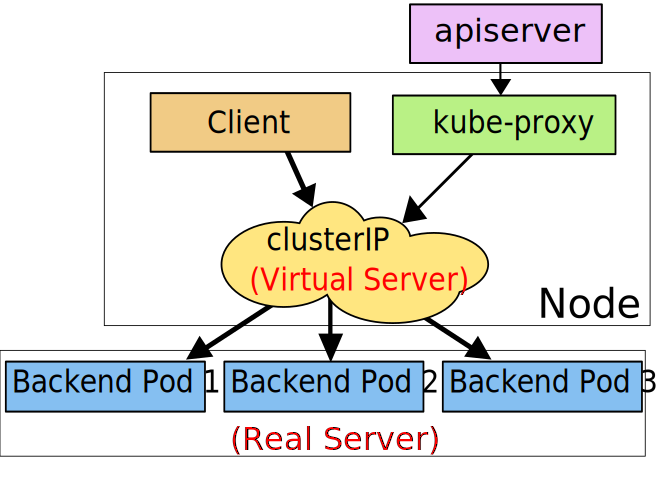

Service - K8S流量路由
Kubernetes Pod 是有生命周期的。 它们可以被创建，而且销毁之后不会再启动。 如果您使用 Deployment 来运行您的应用程序，则它可以动态创建和销毁 Pod。
每个 Pod 都有自己的 IP 地址，但是在 Deployment 中，在同一时刻运行的 Pod 集合可能与稍后运行该应用程序的 Pod 集合不同。
这导致了一个问题： 如果一组 Pod（称为“后端”）为群集内的其他 Pod（称为“前端”）提供功能， 那么前端如何找出并跟踪要连接的 IP 地址，以便前端可以使用工作量的后端部分？
Pod的生命是有限的，如果Pod重启，IP很有可能会发生变化。如果我们的服务都是将Pod的IP地址写死，Pod的IP变化时，后端其他服务也将会不可用。当然我们可以通过手动修改如nginx的反向代理配置来适应后端的服务IP改变，但K8S中的Service对象可以帮助我们自动完成这一功能。
在讨论 Kubernetes 网络连接的方式之前，非常值得与 Docker 中 “正常” 方式的网络进行对比。
默认情况下，Docker 使用私有主机网络连接，只能与同在一台机器上的容器进行通信。 为了实现容器的跨节点通信，必须在机器自己的 IP 上为这些容器分配端口，为容器进行端口转发或者代理。
多个开发人员之间协调端口的使用很难做到规模化，那些难以控制的集群级别的问题，都会交由用户自己去处理。 Kubernetes 假设 Pod 可与其它 Pod 通信，不管它们在哪个主机上。 我们给 Pod 分配属于自己的集群私有 IP 地址，所以没必要在 Pod 或映射到的容器的端口和主机端口之间显式地创建连接。 这表明了在 Pod 内的容器都能够连接到本地的每个端口，集群中的所有 Pod 不需要通过 NAT 转换就能够互相看到。
# 定义Service
如果现在有一个暴露了8080端口的Pod，它被打上了app=the-nginx的标签，有两个副本：
apiVersion: apps/v1
kind: Deployment
metadata:
name: just-a-nginx
spec:
replicas: 2
template:
metadata:
labels:
app: the-nginx
spec:
containers:
- name: the-nginx
image: nginx
ports:
- containerPort: 8080
2
3
4
5
6
7
8
9
10
11
12
13
14
15
16
那么这Pod的两个副本会拥有两个不同的IP地址，在集群中的任何一个容器内都可以通过IP地址访问到这两个副本，但其本身并没有占用其所部署节点的端口，因此无法从外部访问到。
如果我们想从其他Pod（在集群内）通过80端口访问它，那就要创建一个Service将外部端口80映射到有标签app=the-nginx的Pod的8080端口：
apiVersion: v1
kind: Service
metadata:
name: the-service
spec:
selector:
app: the-nginx
ports:
- protocol: TCP
port: 80
targetPort: 8080
2
3
4
5
6
7
8
9
10
11
上述配置创建一个名称为the-service的 Service 对象，它会将请求代理到使用 TCP 端口 8080，并且具有标签app=the-nginx的 Pod 上。Kubernetes为该服务分配一个IP地址（有时称为 "集群IP"），该IP地址由服务代理使用。服务选择算符的控制器不断扫描与其选择器匹配的Pod，然后将所有更新发布到也称为the-service的 Endpoint 对象。
# 查看Service
查看当前Namespace中的Service
$ kubectl get svc
NAME TYPE CLUSTER-IP EXTERNAL-IP PORT(S) AGE
httpd-svc NodePort 10.108.195.47 <none> 8080:30088/TCP 16h
kubernetes ClusterIP 10.96.0.1 <none> 443/TCP 115d
mysql-production ClusterIP 10.102.208.69 <none> 3306/TCP 14d
order NodePort 10.99.99.88 <none> 8080:30080/TCP 17d
2
3
4
5
6
查看所有Namespace中的Service
$ kubectl get svc --all-namespaces
NAMESPACE NAME TYPE CLUSTER-IP EXTERNAL-IP PORT(S) AGE
blog mysql ClusterIP 10.101.134.172 <none> 3306/TCP 30d
blog wordpress NodePort 10.107.173.113 <none> 80:32255/TCP 30d
default httpd-svc ClusterIP 10.108.195.47 <none> 8080/TCP 3m
default kubernetes ClusterIP 10.96.0.1 <none> 443/TCP 114d
default mysql-production ClusterIP 10.102.208.69 <none> 3306/TCP 13d
default order NodePort 10.99.99.88 <none> 8080:30080/TCP 16d
kube-ops jenkins2 NodePort 10.111.112.3 <none> 8080:30005/TCP,50000:30340/TCP 17d
kube-system kube-dns ClusterIP 10.96.0.10 <none> 53/UDP,53/TCP 114d
kube-system kubernetes-dashboard NodePort 10.108.149.176 <none> 443:30002/TCP 111d
2
3
4
5
6
7
8
9
10
11
# Service分类
对一些应用（如前端）的某些部分，可能希望通过外部 Kubernetes 集群外部 IP 地址暴露 Service。
Kubernetes ServiceTypes 允许指定一个需要的类型的 Service，默认是
ClusterIP类型。
# ClusterIP
通过集群的内部 IP 暴露服务，选择该值，服务只能够在集群内部可以访问，这也是默认的ServiceType。

# NodePort
通过每个 Node 节点上的 IP 和静态端口（NodePort）暴露服务。NodePort 服务会路由到 ClusterIP 服务，这个 ClusterIP 服务会自动创建。通过请求，可以从集群的外部访问一个 NodePort 服务。

例如，若要从集群外访问上面那个Pod，可以使用：
apiVersion: v1
kind: Service
metadata:
name: the-service
spec:
selector:
app: the-nginx
type: NodePort
ports:
- protocol: TCP
port: 80
targetPort: 8080
nodePort: 80
2
3
4
5
6
7
8
9
10
11
12
13
如果将 type 字段设置为 NodePort，则 Kubernetes 控制平面将在 --service-node-port-range 标志指定的范围内分配端口（默认值：30000-32767）。 每个节点将那个端口（每个节点上的相同端口号）代理到您的服务中。 您的服务在其 .spec.ports[*].nodePort 字段中要求分配的端口。
如果您想指定特定的 IP 代理端口，则可以将 kube-proxy 中的 --nodeport-addresses 标志设置为特定的 IP 块。从 Kubernetes v1.10 开始支持此功能。
该标志采用逗号分隔的 IP 块列表（例如，10.0.0.0/8、192.0.2.0/25）来指定 kube-proxy 应该认为是此节点本地的 IP 地址范围。
# 将服务暴露给指定的外部IP
比如，我想让上面的Pod只能从指定外部IP访问：
apiVersion: v1
kind: Service
metadata:
name: the-service
spec:
selector:
app: the-nginx
type: NodePort
ports:
- protocol: TCP
port: 80
targetPort: 8080
externalIPs:
- 80.11.12.10 #只能从这个外部IP访问
2
3
4
5
6
7
8
9
10
11
12
13
14
# LoadBalancer
使用云提供商的负载局衡器，可以向外部暴露服务。外部的负载均衡器可以路由到 NodePort 服务和 ClusterIP 服务，这个需要结合具体的云厂商进行操作。

# ExternalName
通过返回 CNAME 和它的值，可以将服务映射到 externalName 字段的内容（例如， foo.bar.example.com）。没有任何类型代理被创建，这只有 Kubernetes 1.7 或更高版本的 kube-dns 才支持。
大多数 Kubernetes 用户都有可能用到集群外部的服务。例如，您可能使用 Twillio API 发送短信，或使用 Google Cloud Vision API 进行图像分析。
如果位于不同环境中的应用连接相同的外部端点，并且您不打算将外部服务引入 Kubernetes 集群，那么在代码中直接使用外部服务端点是完全可以的。然而，很多时候情况并非如此。
一个典型的情况是，我的集群中需要使用一个托管在外部网络中的数据库，而我想在集群中通过一个固定的域名访问它，比如这个数据库是一个MySQL数据库mysql://my.sql.database.example.com，那么我们就可以在集群中定义一个ExternalName类型的Service：
apiVersion: v1
kind: Service
metadata:
name: the-mysql
spec:
type: ExternalName
externalName: my.sql.database.example.com
2
3
4
5
6
7
然后我就可以在集群中通过mysql://the-mysql访问它了。
注：因为是基于DNS的，所以ExternalName没有和端口有关的功能。
# 使用IP访问外部服务
除了上面的ExternalName外，还不得不提使用外部IP访问外部服务的情况。当我有多个外部数据库且部署在同一个位置的不同端口的时候，使用ExternalName就有点麻烦了。这个时候就可以使用一个Headless Services加一个Endpoints将外部IP绑定到集群内：
kind: Service
apiVersion: v1
metadata:
name: mongo
spec:
ports:
- port: 27017
targetPort: 49763
---
kind: Endpoints
apiVersion: v1
metadata:
name: mongo
subsets:
- addresses:
- ip: 35.188.8.12
ports:
- port: 49763
2
3
4
5
6
7
8
9
10
11
12
13
14
15
16
17
18
# 附加知识：Headless Services
有时不需要或不想要负载均衡，以及单独的 Service IP。 遇到这种情况，可以通过指定 Cluster IP（spec.clusterIP）的值为 "None" 来创建 Headless Service。
您可以使用无头 Service 与其他服务发现机制进行接口，而不必与 Kubernetes 的实现捆绑在一起。
对这无头 Service 并不会分配 Cluster IP，kube-proxy 不会处理它们， 而且平台也不会为它们进行负载均衡和路由。 DNS 如何实现自动配置，依赖于 Service 是否定义了选择算符。
# 带选择算符的服务
对定义了选择算符的无头服务，Endpoint 控制器在 API 中创建了 Endpoints 记录， 并且修改 DNS 配置返回 A 记录（地址），通过这个地址直接到达 Service 的后端 Pod 上。
# 无选择算符的服务
对没有定义选择算符的无头服务，Endpoint 控制器不会创建 Endpoints 记录。 然而 DNS 系统会查找和配置，无论是：
- ExternalName 类型 Service 的 CNAME 记录
- 记录：与 Service 共享一个名称的任何 Endpoints，以及所有其它类型
# Service 拓扑
默认情况下，发往 ClusterIP 或者 NodePort 服务的流量可能会被路由到任意一个服务后端的地址上，Service拓扑可以让一个服务基于集群的节点进行流量路由，即把流量路由到指定节点的Pod上。例如，一个服务可以指定流量是被优先路由到一个和客户端在同一个 Node 或者在同一可用区域的端点，以获得低延迟。
# 开启 Service 拓扑
为了启用拓扑感知服务路由功能，必须要满足以下一些前提条件：
- Kubernetes 的版本不低于 1.17
- Kube-proxy 运行在 iptables 模式或者 IPVS 模式
- 启用 端点切片功能
要启用 Service 拓扑，就要给 kube-apiserver 和 kube-proxy 启用 ServiceTopology 功能：
--feature-gates="ServiceTopology=true"
# 使用 Service 拓扑
如果集群启用了 Service 拓扑功能后，就可以在 Service 配置中指定 topologyKeys 字段，从而控制 Service 的流量路由。此字段是 Node 标签的优先顺序字段，将用于在访问这个 Service 时对端点进行排序：
- 流量会被定向到第一个标签值和源
Node标签值相匹配的Node。 - 如果这个
Service没有匹配的后端Node，那么第二个标签会被使用做匹配 - 以此类推，直到没有标签。
- 如果没有匹配到，流量会被拒绝，就如同这个
Service根本没有后端。
这个字段配置为 "*" 意味着任意拓扑。这个通配符值如果使用了，那么只有作为配置值列表中的最后一个才有用。
# 原理简介——集群网络系统
集群网络系统是 Kubernetes 的核心部分，但是想要准确了解它的工作原理可是个不小的挑战。下面列出的是网络系统的的四个主要问题：
- 高度耦合的容器间通信：这个已经在Pod的结构内部解决了。
- Pod 间通信：这个是本文档的重点要讲述的。
- Pod 和 Service 间通信：这个已经在上文里讲述过了。
- 外部和 Service 间通信：这个也已经在上文里讲述过了。
Kubernetes 的宗旨就是在应用之间共享机器。通常来说，共享机器需要两个应用之间不能使用相同的端口，但是在多个应用开发者之间去大规模地协调端口是件很困难的事情，尤其是还要让用户暴露在他们控制范围之外的集群级别的问题上。
动态分配端口也会给系统带来很多复杂度 - 每个应用都需要设置一个端口的参数，而 API 服务器还需要知道如何将动态端口数值插入到配置模块中，服务也需要知道如何找到对方等等。与其去解决这些问题，Kubernetes 选择了其他不同的方法。
# Kubernetes 网络模型
每一个
Pod都有它自己的IP地址，这就意味着你不需要显式地在每个Pod之间创建链接，你几乎不需要处理容器端口到主机端口之间的映射。这将创建一个干净的、向后兼容的模型，在这个模型里，从端口分配、命名、服务发现、负载均衡、应用配置和迁移的角度来看，Pod可以被视作虚拟机或者物理主机。Kubernetes 对所有网络设施的实施，都需要满足以下的基本要求（除非有设置一些特定的网络分段策略）：
- 节点上的 pods 可以不通过 NAT 和其他任何节点上的 pods 通信
- 节点上的代理（比如：系统守护进程、kubelet） 可以和节点上的所有pods通信
备注：仅针对那些支持
Pods在主机网络中运行的平台(比如：Linux) ：
- 那些运行在节点的主机网络里的 pods 可以不通过 NAT 和所有节点上的 pods 通信
这个模型不仅不复杂，而且还和 Kubernetes 的实现廉价的从虚拟机向容器迁移的初衷相兼容，如果你的工作开始是在虚拟机中运行的，你的虚拟机有一个 IP ，这样就可以和其他的虚拟机进行通信，这是基本相同的模型。
Kubernetes 的 IP 地址存在于
Pod范围内 - 容器分享他们的网络命名空间 - 包括他们的 IP 地址。这就意味着Pod内的容器都可以通过localhost到达各个端口。这也意味着Pod内的容器都需要相互协调端口的使用，但是这和虚拟机中的进程似乎没有什么不同，这也被称为“一个 pod 一个 IP” 模型。如何实现这一点是正在使用的容器运行时的特定信息。
也可以在
node本身通过端口去请求你的Pod（称之为主机端口），但这是一个很特殊的操作。转发方式如何实现也是容器运行时的细节。Pod自己并不知道这些主机端口是否存在。
# 原理简介——kube-proxy、VIP 和 Service 代理
在 Kubernetes 集群中，每个 Node 运行一个
kube-proxy进程。kube-proxy负责为 Service 实现了一种 VIP（虚拟 IP）的形式，而不是ExternalName的形式。
# kube-proxy的三种代理模式
# userspace 代理模式 - 通过代理端口传数据
这种模式，kube-proxy 会监视 Kubernetes 主控节点对 Service 对象和 Endpoints 对象的添加和移除操作。对每个 Service，它会在本地 Node 上打开一个端口（随机选择）。任何连接到“代理端口”的请求，都会被代理到 Service 的后端
Pods中的某个上面（如Endpoints所报告的一样）。 使用哪个后端 Pod，是 kube-proxy 基于SessionAffinity来确定的。最后，它配置 iptables 规则，捕获到达该 Service 的
clusterIP（是虚拟 IP）和Port的请求，并重定向到代理端口，代理端口再代理请求到后端Pod。默认情况下，用户空间模式下的 kube-proxy 通过轮转算法选择后端。

# iptables 代理模式 - 直接通过iptables传数据
这种模式，
kube-proxy会监视 Kubernetes 控制节点对 Service 对象和 Endpoints 对象的添加和移除。对每个 Service，它会配置 iptables 规则，从而捕获到达该 Service 的clusterIP和端口的请求，进而将请求重定向到 Service 的一组后端中的某个 Pod 上面。对于每个 Endpoints 对象，它也会配置 iptables 规则，这个规则会选择一个后端组合。默认的策略是，kube-proxy 在 iptables 模式下随机选择一个后端。

# IPVS 代理模式
在
ipvs模式下，kube-proxy监视Kubernetes服务和端点，调用netlink接口相应地创建 IPVS 规则，并定期将 IPVS 规则与 Kubernetes 服务和端点同步。 该控制循环可确保IPVS 状态与所需状态匹配。访问服务时，IPVS 将流量定向到后端Pod之一。IPVS代理模式基于类似于 iptables 模式的 netfilter 挂钩函数，但是使用哈希表作为基础数据结构，并且在内核空间中工作。这意味着，与 iptables 模式下的 kube-proxy 相比，IPVS 模式下的 kube-proxy重定向通信的延迟要短，并且在同步代理规则时具有更好的性能。与其他代理模式相比，IPVS 模式还支持更高的网络流量吞吐量。
IPVS提供了更多选项来平衡后端Pod的流量。 这些是：
rr: round-robinlc: least connection (smallest number of open connections)dh: destination hashingsh: source hashingsed: shortest expected delaynq: never queue